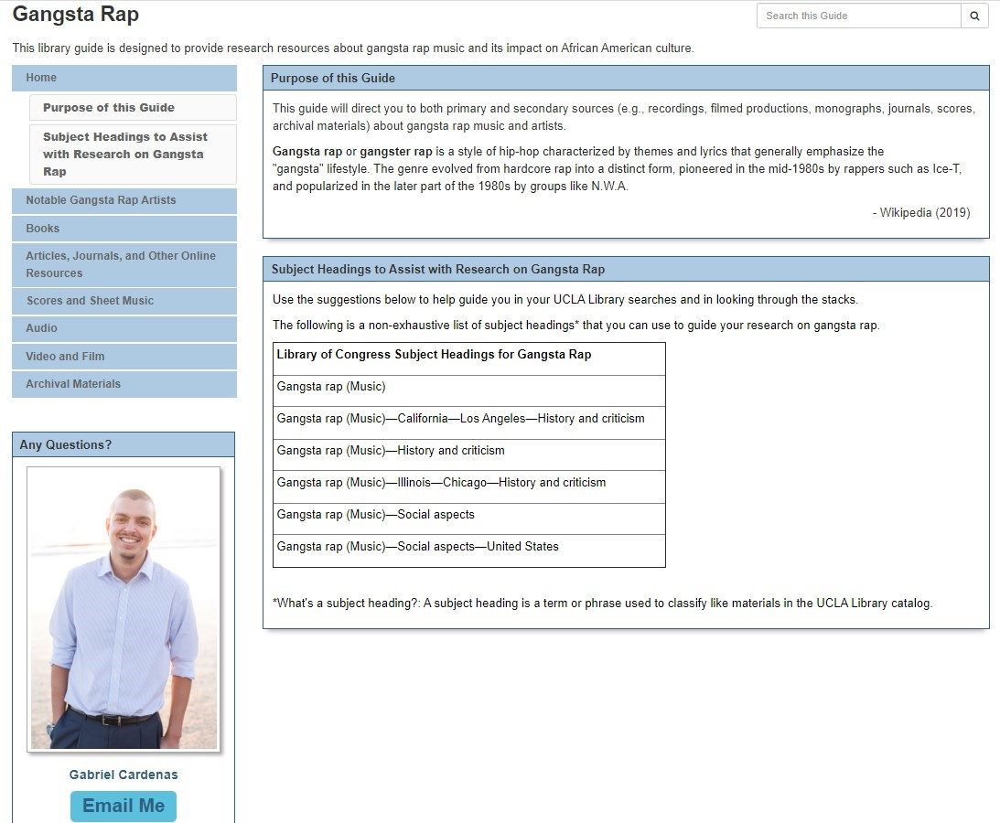
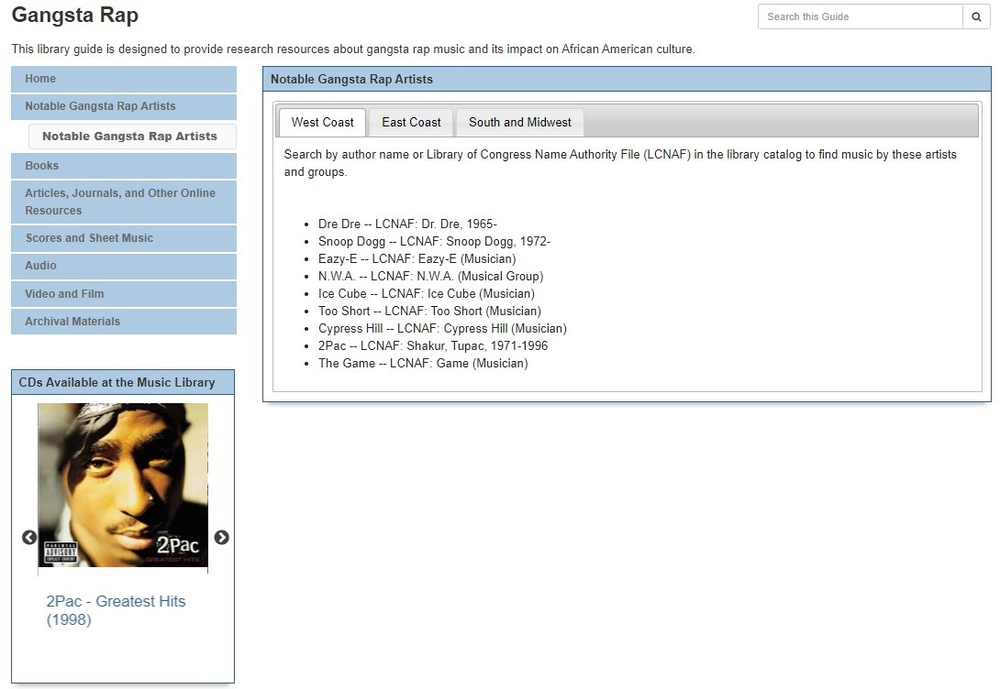
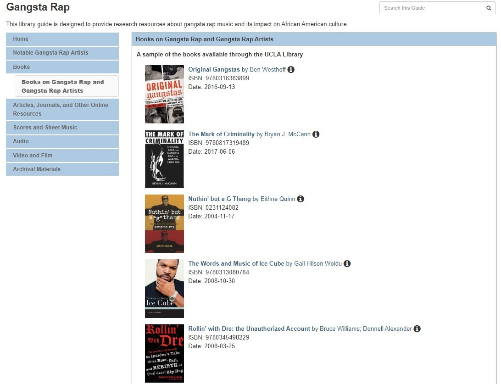
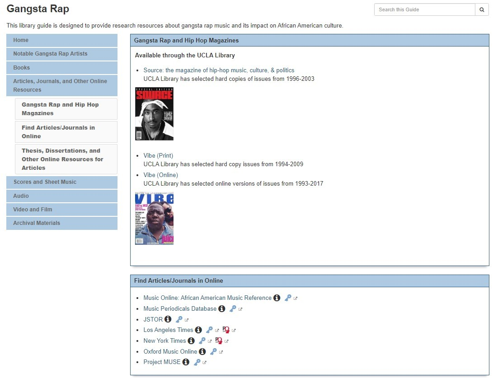
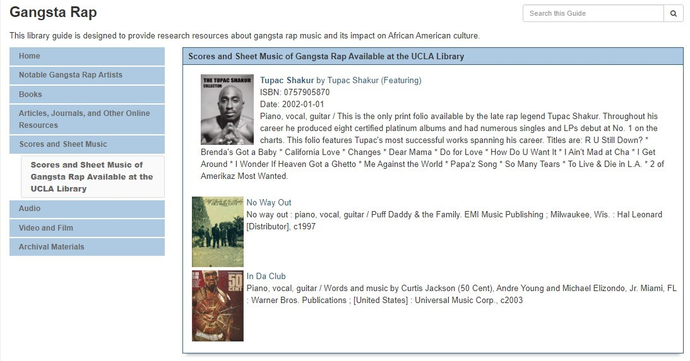
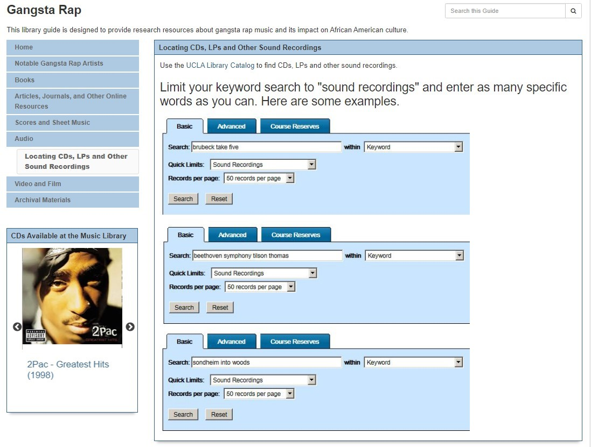

About This Project This LibGuide was my final project for IS 289 Performing Arts Librarianship. The UCLA Library has a LibGuide titled "Motown, R&B (Soul), Funk, Rap, and Hip-Hop", however I felt that gangsta rap is a historically and culturally significant genre of music that warrants its own LibGuide. I was able to find many resources both in the UCLA Library catalog as well as freely available online resources that researchers of the subject could use and navigate through easily. It has not been publicly published by the UCLA Library, however I did provide screenshots. Below is the opening page.

On this page I show the authority names of various gangsta rap artists, organized by which area of the country they are most affiliated with.

Here, I provide links and images to books about gangsta rap, users can check out from the UCLA Library.

On this page, I provide links to journal articles and databases about gangsta rap that are licensed by UCLA.

Here, I show users examples of gangsta rap sheet music that the UCLA library has as well as how to search for CDs and albums in the UCLA Library Catalog.


On this page I give the user examples of links to gangsta rap videos and films that can be found in the UCLA Library collection.
I was also able to find archival materials both inside and outside the UCLA Library Collection.